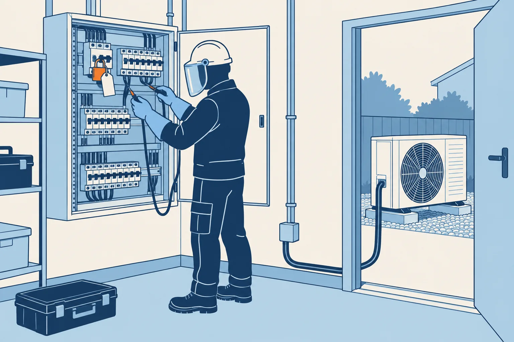

Électrique · niveau BTS
Consigner — VAT, les 4 étapes
Mini-station commentée · 8 écrans et 4 questions · environ 10 minutes

À la fin de la station, vous savez dire pourquoi un arrêt ne suffit pas, enchaîner dans l'ordre les opérations d'une consignation électrique — séparer, condamner, identifier, vérifier l'absence de tension, puis mettre à la terre et en court-circuit quand elle est prescrite —, dire qui consigne et avec quel papier, et repérer que le fluide sous pression et les pièces mobiles d'un groupe se consignent aussi.
Référentiel : TP TECVC, REAC TP-00133 — Hors REAC : culture professionnelle du technicien et du chargé d'affaires.
Chaque écran peut être expliqué à voix haute : le bouton « Écouter » commente ce que vous voyez. Rien n'est dit qui ne soit aussi écrit.
Écran 3 sur 8
Séparer, condamner, identifier
- Séparer : l'équipement est isolé de façon certaine de toutes les sources possibles de tension, amont et aval. La séparation se constate : vue directe des contacts, retrait d'un pont, d'un fusible ou d'une fiche de prise. Le contre-exemple de l'INRS : une armoire ouverte, fusibles laissés à disposition, neutre non coupé.
- Condamner : maintenir la séparation par un blocage mécanique (serrure, cadenas) de l'organe ouvert, avec un moyen dédié — pas le cadenas d'un casier — et une signalisation très visible : une pancarte « CONDAMNÉ — DÉFENSE DE MANŒUVRER SANS AUTORISATION », avec nom, date, heure, repère.
- Identifier : s'assurer, sur le lieu de travail, que l'équipement consigné est bien celui prévu, pour ne pas intervenir sur un autre. L'appareil de séparation doit lui-même être identifié de façon durable.
Une commande locale d'arrêt ne sépare pas forcément de toutes les sources : condensateurs, seconde alimentation, circuits de commande. La séparation suit la procédure, pas l'intuition (HoCourant, module M9).
![À gauche, une armoire avec un sectionneur représenté sur un seul conducteur. Le conducteur amont est orange, sous tension. La lame du sectionneur s'ouvre ; le conducteur aval devient gris, hors tension. Un cadenas bloque le sectionneur ouvert. En haut à droite, une pancarte rouge porte CONDAMNÉ, DÉFENSE DE MANŒUVRER SANS AUTORISATION, avec nom, date, heure et repère. En bas à droite, deux groupes portent chacun une plaque de repère, Q1 et Q2 ; la plaque Q2 est entourée : le repère du sectionneur est celui du groupe.](svg/separer-condamner.svg)
Écran 4 sur 8
Vérifier l'absence de tension : la VAT
La VAT se fait sur chacun des conducteurs actifs, neutre compris, avec un vérificateur d'absence de tension spécialement conçu à cet effet, au lieu de travail (INRS, ED 6109, § 5.1). Les appareils de mesurage et les détecteurs de type voltmètre, tournevis testeur, etc. ne sont pas des VAT.
Le vérificateur se contrôle avant et après, sur une source connue : c'est ce qui prouve qu'il fonctionnait au moment où il indiquait « pas de tension ». Si le contrôle d'après échoue, la vérification n'est pas validée : on reprend (pratique enseignée en formation à l'habilitation, HoCourant M3 et M9).
La VAT est elle-même une opération sur une installation qui peut être sous tension : elle demande donc les mesures de sécurité correspondantes (ED 6109, § 4.1).
Un détecteur conforme indique sans ambiguïté la présence ou l'absence de la tension de service ; il ne détecte pas les tensions induites (INRS, ED 6109).
![Trois vignettes côte à côte, chacune avec un vérificateur d'absence de tension dont le voyant est en haut. Première vignette : le vérificateur est contrôlé sur une source connue, voyant allumé. Deuxième vignette : il est appliqué sur chaque conducteur, L1, L2, L3 et neutre ; le voyant reste éteint et une coche verte marque chaque conducteur. Troisième vignette : nouveau contrôle sur la source connue, voyant allumé. Une bande rappelle qu'il faut un vérificateur conçu pour cela, pas un voltmètre ni un tournevis testeur.](svg/verifier-absence-tension.svg)
Écran 6 sur 8
Qui consigne, avec quel papier, et le retour
Les opérations sur les installations électriques ne peuvent être effectuées que par des travailleurs habilités (Code du travail, art. R. 4544-9), l'habilitation étant délivrée par l'employeur après une formation (art. R. 4544-10). Pour consigner, le symbole est C : BC en basse tension, HC en haute tension (INRS, ED 6127).
Le chargé de consignation est la personne désignée par son employeur pour consigner et déconsigner un équipement et délivrer les attestations correspondantes ; il peut faire exécuter les opérations par le personnel placé sous sa responsabilité (ED 6109). Les documents de l'opération : l'attestation de consignation (en une ou deux étapes), puis l'avis de fin de travail (ED 6127).
La déconsignation est généralement conduite dans l'ordre inverse (ED 6109, § 5.2) : retirer écrans, protecteurs et balisages ; déposer les mises en court-circuit puis les mises à la terre, en commençant par l'extrémité côté conducteur actif ; retirer la condamnation ; refermer l'organe de séparation.
« Dans l'ordre inverse » n'est pas un automatisme : la déconsignation ne consiste pas systématiquement à refaire les opérations à l'envers, elle suit l'analyse des risques et le besoin de tester (ED 6109, § 4.1). Et jamais « pour voir si ça marche » : la tension ne revient qu'après déconsignation, si son rétablissement ne présente aucun risque (art. R. 4544-5).
![Schéma en trois bandes. En haut, de gauche à droite : le chargé de consignation, habilité BC, remet une attestation de consignation, représentée par une feuille, au chargé de travaux. Au milieu, une bande rappelle que pendant les travaux la tension ne peut pas revenir. En bas, de droite à gauche : le chargé de travaux rend un avis de fin de travail au chargé de consignation, qui déconsigne. Un encadré résume le retour : protections et mises à la terre, condamnation, refermeture de l'appareil de séparation.](svg/attestation-retour.svg)
Écran 7 sur 8
Les autres énergies : le pont vers la DESP
Un groupe extérieur cumule trois énergies. L'INRS traite chacune par une procédure (ED 6109, chap. 5 à 7), et leur ordre dépend de l'analyse des risques : la consignation mécanique des pales d'un ventilateur exige, par exemple, la consignation électrique préalable de son moteur (§ 4.1).
- Fluidique (fluide sous pression) : séparation de toute arrivée de fluide, dissipation (purge), condamnation des organes de séparation en position fermée et des organes de purge en position ouverte, vérification de l'absence de risque résiduel (§ 6.1). Une vanne seule peut fuir : elle ne suffit que si une légère fuite est sans risque ; deux vannes fermées et une purge intermédiaire ouverte forment un isolement renforcé.
- Mécanique : des pièces peuvent bouger sous l'effet d'une énergie cinétique ou potentielle — vent sur des pales, chute d'une masse, détente d'un ressort. Séparation, dissipation, immobilisation, vérification (§ 7).
Le circuit frigorifique est un équipement sous pression (DESP, en service) : sa consignation s'appuie sur des organes de séparation et de purge prévus dès la conception, avec des instructions du constructeur (ED 6109, § 3 et § 6.1). Sur ce circuit, la purge n'est pas un rejet à l'air libre : le fluide frigorigène se récupère (F-Gaz 3).
![À gauche, trois cartes empilées : électrique (sectionneur ouvert et condamné, tension vérifiée absente), fluidique (vannes fermées, purge ouverte, absence de pression vérifiée), mécanique (pales immobilisées, masses calées, ressorts détendus). À droite, un circuit de fluide avec deux vannes fermées ; entre elles, une branche porte une vanne de purge ouverte, dont le fluide est récupéré, et une autre branche descend vers un manomètre dont l'aiguille est revenue à zéro. Une bande rappelle que couper l'électricité ne consigne ni le fluide ni les pièces mobiles.](svg/autres-energies.svg)
Les correspondances de la station
- Habilitation électrique (même sous-ligne) — qui a le droit de consigner : le symbole BC, l'employeur qui habilite.
- Terre et différentiel (même sous-ligne) — la terre de protection de l'installation, à ne pas confondre avec la mise à la terre de consignation.
- Les 9 principes de prévention (Risques professionnels) — consigner, c'est éliminer le risque à la source plutôt que s'en protéger.
- La DESP en service (La DESP) — le circuit frigorifique est un équipement sous pression : sa consignation fluidique en découle.
- HoCourant (réseau technique) — le module M9 « Mettre en sécurité : la consignation », en films.